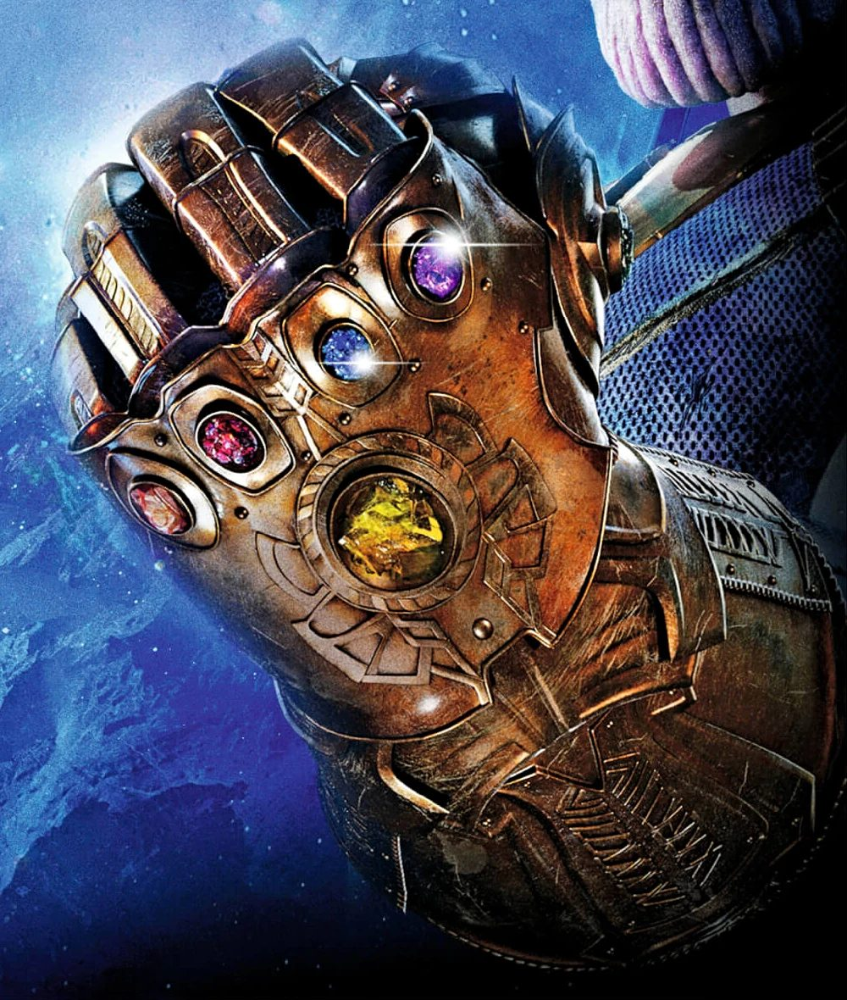

1. The challenge
Soul in the Shadows There is more to this image than what you can see. Recover the hidden flag. Flag format:
OWASP{...}
Attachment: a player archive containing a single image, archive.png, and a
short challenge.txt repeating the prompt. The title and the "more than you can
see" line both point at pixel-level steganography.

2. Triage
First pass is always cheap metadata and structure inspection, because it tells you where not to dig.
$ file archive.png
archive.png: PNG image data, 1000 x 1180, 8-bit/color RGB, non-interlaced
$ identify archive.png
archive.png PNG 1000x1180 1000x1180+0+0 8-bit sRGB 2.01123MiBNothing exotic - a plain 8-bit RGB PNG, no alpha channel, non-interlaced. Next, walk the PNG chunk list and check for data smuggled outside the pixels:
- Chunks present:
IHDR, threetEXt, ~33 ×IDAT,IEND. - No trailing bytes after
IEND(a classic ZIP/append trick) - the file ends cleanly. binwalkfinds nothing but the PNG header and its own zlibIDATstream - no embedded archive, no secondary file.
So the payload is not appended or embedded as a file; it must be inside the pixels or in the text chunks.
3. The metadata hint
exiftool surfaces the three tEXt chunks:
| Keyword | Value |
|---|---|
| Title | Forgotten Record |
| Author | Archives |
| Comment | Some things are left behind on Vormir. |
The Comment is doing real work here. The title ("Forgotten Record") and author ("Archives") are pure atmosphere, but Vormir is a deliberate breadcrumb - in the MCU, Vormir is the planet of the Soul Stone, and the prompt is "Soul in the Shadows." A place-name like that is almost never scenery in a stego challenge; it is a candidate key, password, or XOR mask. Keep it in your pocket.
4. Finding the payload
With pixels as the only remaining carrier, the right tool is zsteg, which
brute-forces every combination of bit-plane, channel order, bit significance, and
scan direction:
$ zsteg -a archive.pngBuried in the output, one channel decodes to clean, readable ASCII:
b1,rgb,lsb,xy .. text: "The archive was checked twice.
GRgTHhkpIic3Ejo9IyMNOighCSc3Pywv
The records showed nothing unusual.
::END::"Decoding that channel directly gives exactly:
$ zsteg -e b1,rgb,lsb,xy archive.png
The archive was checked twice.
GRgTHhkpIic3Ejo9IyMNOighCSc3Pywv
The records showed nothing unusual.
::END::Interpreting the channel spec:
b1- bit-plane 1 (the least-significant bit of each byte).rgb- all three colour channels, in R→G→B order.lsb- least-significant bit first.xy- normal raster order (row by row, left to right).
So the message is stored one bit per colour-component LSB, a very common and very
robust scheme. The surrounding prose ("checked twice", "nothing unusual") is
flavour, and ::END:: is a self-imposed terminator. The middle line is the
payload:
GRgTHhkpIic3Ejo9IyMNOighCSc3Pywv32 characters, mixed case with digits - the signature of Base64. Decoding it yields 24 opaque bytes, not text, so there is a second layer:
$ echo 'GRgTHhkpIic3Ejo9IyMNOighCSc3Pywv' | base64 -d | xxd
00000000: 1918 131e 1929 2227 3712 3a3d 2323 0d3a .....)"'7.:=##.:
00000010: 2821 0927 373f 2c2f (!.'7?,/5. Cracking the second layer
We have 24 bytes and a strong hint that the word VORMIR is the key. Test it as
a repeating-key XOR and use a known-plaintext check: every solution must start
with OWASP{.
ciphertext[0..5] : 19 18 13 1e 19 29
key "VORMIR" : 56 4f 52 4d 49 52
XOR : 4f 57 41 53 50 7b -> "OWASP{"The first six bytes XOR cleanly to the flag prefix, so the key is correct. Apply
it across the whole 24-byte blob (key[i % 6]):
$ echo 'GRgTHhkpIic3Ejo9IyMNOighCSc3Pywv' | base64 -d | python3 -c \
"import sys;d=sys.stdin.buffer.read();k=b'VORMIR';print(''.join(chr(b^k[i%6]) for i,b in enumerate(d)))"
OWASP{the_soul_was_here}6. Flag
OWASP{the_soul_was_here}7. The three-layer chain
- Pixels - a base64 string hidden in the R/G/B LSBs (
b1,rgb,lsb,xy). - Encoding - Base64, hiding 24 raw bytes rather than ASCII.
- Cipher - repeating-key XOR with
VORMIR, the key teased by the PNG metadata comment and the challenge title.
Each layer has a tell: the LSB channel produced readable prose, the Base64 string had the right alphabet and length, and the decoded bytes failed every text test (high-bit and control characters) - the universal sign that you are looking at ciphertext, not a mis-decode.
8. One-shot reproduction
1zsteg -e b1,rgb,lsb,xy archive.png | sed -n 2p | base64 -d \
2 | python3 -c "import sys;d=sys.stdin.buffer.read();k=b'VORMIR';print(''.join(chr(b^k[i%6]) for i,b in enumerate(d)))"
3# OWASP{the_soul_was_here}Or simply:
1python3 solve.py archive.png9. Lessons / takeaways
- Read the metadata first. A $0
exiftoolcall here supplied the XOR key. Metadata is where challenge authors hide hints they want you to find. - Titles and comments are content. "Soul", "Vormir", "shadows" were all signalling, not scenery.
- Know what "not text" looks like. Control characters and bytes ≥ 0x80 after a Base64 decode mean "another layer", not "wrong channel".
- Use known-plaintext. The fixed
OWASP{prefix instantly validates a guess at the XOR key; never brute-force blindly when the answer format is known. zsteg -ais exhaustive here. Once it printed the ASCII channel, the bit-plane search was finished - no need to keep sweeping.
Coverage / confidence
- Complete - the
zsteg -asweep is exhaustive over bit-planes/orders, and the one payload channel is unambiguous and self-delimiting (::END::). - Key recovery is verified by known-plaintext (
OWASP{prefix). - HIGH confidence. Flag submitted once.